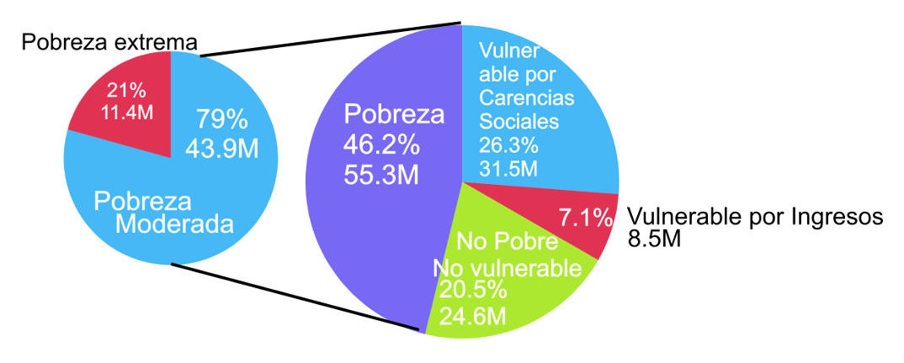

Las estimaciones que realiza cada dos años el Consejo Nacional de Evaluación de la Política de Desarrollo Social, CONEVAL, son cálculos que parten de las estadísticas generadas por los instrumentos de INEGI, las cuales determinan el curso que ha de seguir la política de desarrollo social.
La gráfica 1 muestra cómo se distribuye la población total del estado en base a cuatro criterios:
- Población en situación de pobreza
- Población vulnerable por carencias sociales
- Población vulnerable por ingresos
- Población no pobre ni vulnerable
Gráfica 1. Resultados en Coahuila. En Miles de personas.

Las estimaciones para 2014 nos muestran que 3 de cada 10 coahuilenses se encuentra en situación de pobreza, la población vulnerable por carencias sociales representan a 1 de cada 4 habitantes, las personas vulnerables por ingresos se calcula en 1 por cada 10. La población que no tiene algún tipo de necesidad básica sin cubrir (que no es pobre, ni vulnerable) representa al 34.5% de la población de Coahuila. Comparando la población en pobreza moderada y pobreza extrema con el total de la población tenemos que el 26.4% de los coahuilenses vive en pobreza moderada y el 3.7% en pobreza extrema. A continuación se muestran los resultados para todo el país:
Gráfica 1.1. Resultados a nivel nacional. Millones de personas.

En el país, los resultados muestran que poco menos de la mitad de la población en el país se encuentra en situación de pobreza en general. Las personas que viven en extrema pobreza en comparación con el total de la población nacional proyectada para 2014 representa el 9.5%, aproximadamente 1 de cada 10. La pobreza moderada es padecida por el 36.6% de los habitantes de México.
Profundizando sobre lo que representa la población en situación de pobreza, cómo está conformada de acuerdo a los criterios de CONEVAL y cuál fue su comportamiento en relación a la estimación de 2012 se presenta la tabla 1:
Tabla 1. Indicadores Coahuila. En Miles de personas.
| Pobreza | 2012 | Fluctuación | 2014 |
|---|---|---|---|
| Población en situación de pobreza | 799.281 | 10.8% | 885.786 |
| Población en situación de pobreza moderada | 706.588 | 9.8% | 776.078 |
| Población en situación de pobreza extrema | 92.693 | 18.4% | 109.708 |
La población con ingreso inferior al valor de la línea de bienestar y que padece al menos una carencia social; catalogada como Población en situación de pobreza, aumentó 10.8% (+86,505 personas) de 2012 a 2014. La población en pobreza es la sumatoria de la población en pobreza moderada y población en pobreza extrema, teniendo un incremento del 9.8 y 18.4% respectivamente, representando +69,490 y +17,015 personas. A nivel nacional la pobreza aumentó 3.8%, moderada en 5% y extrema se redujo en -0.9% (Tabla 1.1).
Tabla 1.1. Indicadores NACIONAL. Millones de personas.
| Pobreza | 2012 | Fluctuación | 2014 |
|---|---|---|---|
| Población en situación de pobreza | 53.3 | 3.8% | 55.30 |
| Población en situación de pobreza moderada | 41.8 | 5.0% | 43.90 |
| Población en situación de pobreza extrema | 11.5 | -0.9% | 11.40 |
La Tabla 2 y 2.1 muestran el comportamiento de los datos en los segmentos de la población que no es considerada en situación de pobreza. Los indicadores hacen referencia; dos a la vulnerabilidad y uno a la población no pobre ni vulnerable. La tabla 2 hace referencia a Coahuila y la 2.1 a todo el país.
Tabla 2. Indicadores Coahuila. En Miles de personas.
| Indicadores Coahuila | 2012 | Fluctuación | 2014 |
|---|---|---|---|
| Población vulnerable por carencias sociales | 699.334 | 1.6% | 710.674 |
| Población vulnerable por ingresos | 364.784 | -10.8% | 325.319 |
| Población no pobre y no vulnerable | 998.744 | 1.5% | 1014.069 |
La población vulnerable por carencias sociales son habitantes que presentan una o más carencias sociales, pero cuyo ingreso es superior a la línea de bienestar aumentó 1.6%. La población vulnerable por ingresos es cuando no se presentan carencias sociales y cuyos ingresos son inferior o igual a la línea de bienestar, disminuyó 10.8%, +39,465 personas (en contraste al aumento de 10.8% de la población en pobreza en el mismo ciclo). La población que no es pobre, ni vulnerable aumento 1.5% (+15,000 personas). Los indicadores muestran datos destacables, sobre todo el crecimiento de la población no pobre y en la vulnerabilidad por ingresos en Coahuila. A nivel nacional la población no pobre aumentó 6% y la población vulnerable por ingresos creció 18.1% (tabla 2.1).
Tabla 2.1. Indicadores NACIONAL. Millones de personas.
| Indicadores NACIONAL | 2012 | Fluctuación | 2014 |
|---|---|---|---|
| Población vulnerable por carencias sociales | 33.5 | -6.0% | 31.5 |
| Población vulnerable por ingresos | 7.2 | 18.1% | 8.5 |
| Población no pobre y no vulnerable | 23.2 | 6.0% | 24.6 |
La siguiente tabla muestra a la población vulnerable por carencias sociales agrupadas en población con al menos una carencia y población con al menos tres.
Tabla 3. Indicadores Coahuila. En Miles de personas.
| Privación social | 2012 | Fluctuación | 2014 |
|---|---|---|---|
| Población con al menos una carencia social | 1498.615 | 6.5% | 1596.46 |
| Población con al menos tres carencias sociales | 295.113 | -2.0% | 289.194 |
La población con al menos una carencia en Coahuila aumentó 6.5%. La población con al menos tres carencias tuvo una reducción de 2% de 2012 a 2014. De los dos indicadores anteriores podemos ver el enfoque hacia la reducción de la población más vulnerable, por lo que se descuidó a los que tienen al menos una carencia en el estado (Tabla 3). A nivel nacional hubo una reducción en ambos indicadores: -0.1 y -5.7% (Tabla 3.1).
Tabla 3.1. Indicadores NACIONAL. En Millones de personas.
| Privación social | 2012 | Fluctuación | 2014 |
|---|---|---|---|
| Población con al menos una carencia social | 86.9 | -0.1% | 86.8 |
| Población con al menos tres carencias sociales | 28.1 | -5.7% | 26.5 |
Los indicadores de carencias sociales son: rezago educativo, carencia por acceso a servicios de salud, por seguridad social, por calidad y espacio de vivienda, por servicios básicos en vivienda y por alimentación.
De acuerdo a las estimaciones para Coahuila; el rezago educativo no tuvo mejora, mas su incremento fue menor al de la población*. La población sin acceso a los servicios de salud aumentó 10.9%. Las personas sin acceso a servicios básicos de vivienda a pesar de que no muestra disminución en relación al ciclo anterior su aumento fue el mismo que la población del estado. La carencia de acceso a la alimentación aumentó 6.5%. La población con carencia por acceso a seguridad social aumentó 2.2%. De acuerdo a los datos, podemos asumir que los esfuerzos para disminuir la carencia social fueron focalizados a la calidad y espacios de la vivienda (materiales y hacinamiento, es decir, ocupación por cuarto de vivienda), ya que hubo una notoria disminución en relación a la medición anterior, -5.4% que representa a 8,384 personas. Tabla 4.
A nivel nacional; la población con carencias de servicios de salud tuvo una notable disminución, 3.5 millones de personas a diferencia de 2012, el aumento de la población en el país durante el ciclo fue de aproximadamente 2.6 millones de personas, observamos que poco más de 1 millón de habitantes fueron integrados a los servicios de salud además de cubrir a la nueva población, es decir, al 2.3% de la población total que aumentó de 2012 a 2014.
Los indicadores de carencias por servicios básicos de vivienda y alimentación aumentaron de acuerdo al incremento de la población en el país. La disminución de la población carente de espacios y calidad de vivienda también disminuyó a nivel nacional a un ritmo ligeramente mayor a la mejora en Coahuila. -7.1% nacional contra -5.4% estatal. Tabla 4.1.
Tabla 4.1. Indicadores NACIONAL. En Millones de personas.
| Indicadores de carencia social | 2012 | Fluctuación | 2014 |
|---|---|---|---|
| Rezago educativo | 22.6 | -0.9% | 22.4 |
| Carencia por acceso a los servicios de salud | 25.3 | -13.8% | 21.8 |
| Carencia por acceso a la seguridad social | 71.8 | -2.4% | 70.1 |
| Carencia por calidad y espacios en la vivienda | 15.9 | -7.1% | 14.8 |
| Carencia por acceso a los servicios básicos en la vivienda | 24.9 | 2.2% | 25.4 |
| Carencia por acceso a la alimentación | 27.4 | 2.3% | 28.0 |
El tema del ingreso es medido en cuanto la ubicación de las personas en relación a la línea de bienestar y la línea de bienestar mínimo. La población que cuyo ingreso no es suficiente para una alimentación adecuada (bienestar mínimo) aumentó, y se encuentra por encima del crecimiento de la población total en el Estado 3.9% contra 3.2%. La población con ingreso por debajo de L.B. aumentó a un ritmo mayor que la población total. Tabla 5.
Tabla 5. Indicadores Coahuila. En Miles de personas
| Bienestar | 2012 | Fluctuación | 2014 |
|---|---|---|---|
| Población con ingreso inferior a la línea de bienestar mínimo | 333.402 | 3.9% | 346.351 |
| Población con ingreso inferior a la línea de bienestar | 1164.065 | 4.0% | 1211.105 |
Las estimaciones a nivel nacional (tabla 5.1) muestran un incremento de la población en este indicador, fue mayor al que se calculó para Coahuila, además que el ritmo de 4.8 y 5.3% representan más del doble en comparación al incremento de la población total en el país, 2.3%.
Tabla 5.1. Indicadores NACIONAL. En Millones de personas.
| Bienestar | 2012 | Fluctuación | 2014 |
|---|---|---|---|
| Población con ingreso inferior a la línea de bienestar mínimo | 23.5 | 4.8% | 24.6 |
| Población con ingreso inferior a la línea de bienestar | 60.6 | 5.3% | 63.8 |
- Nota: para dimensionar los incrementos o decrementos de las estimaciones, se anexan los porcentajes de crecimiento de la población del estado y del país de acuerdo a CONAPO: Coahuila: 3.2% y México: 2.3% durante el ciclo 2012-2014.